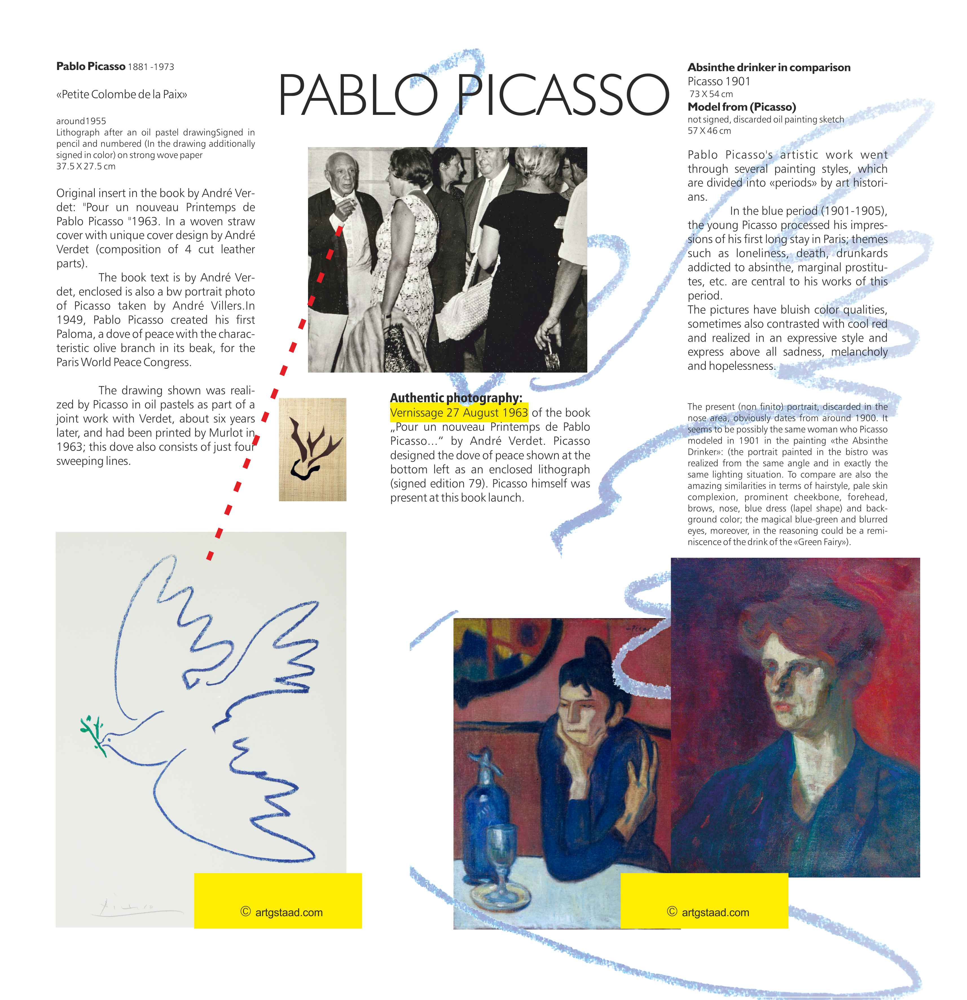
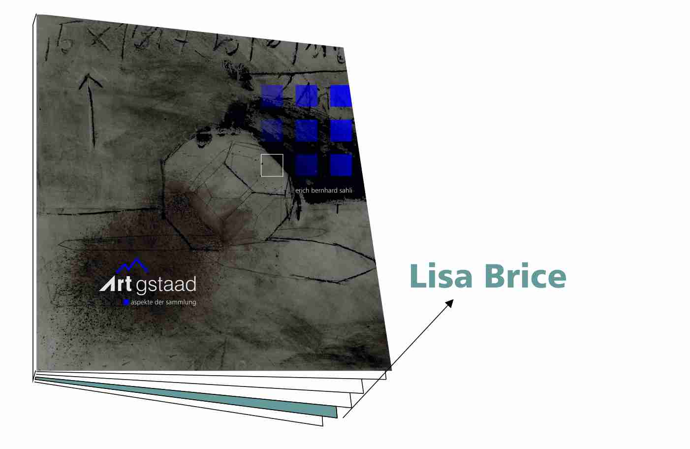
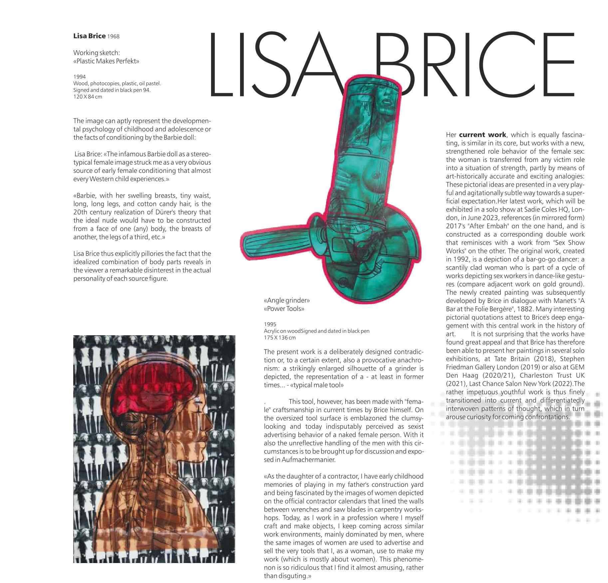
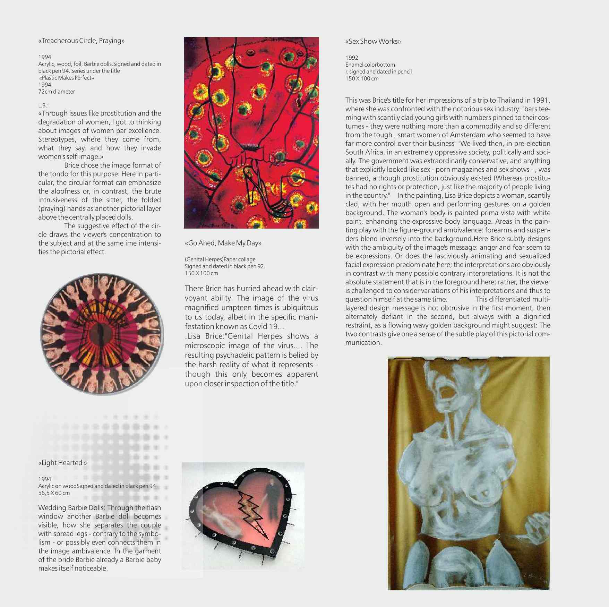
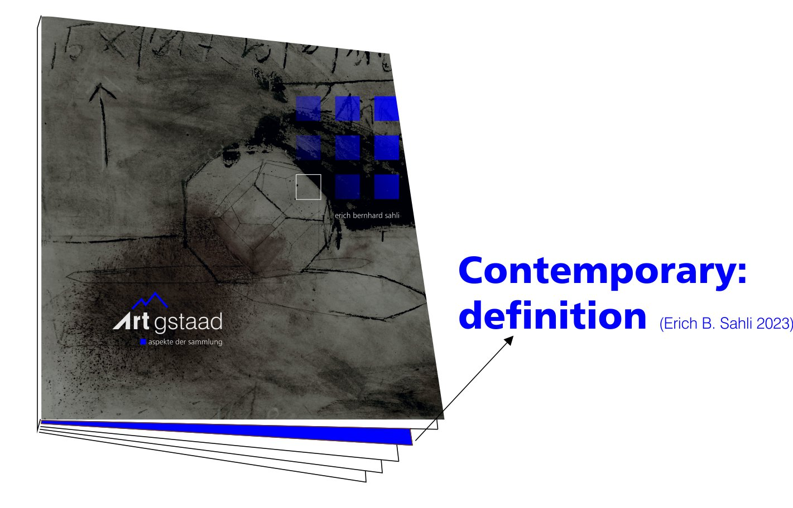
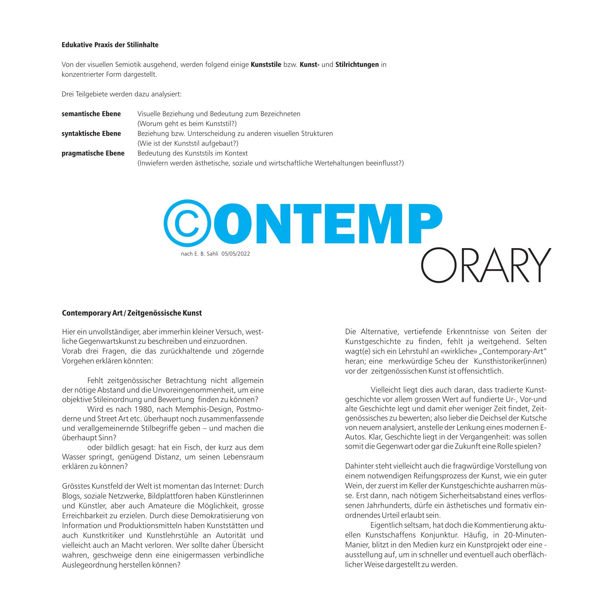
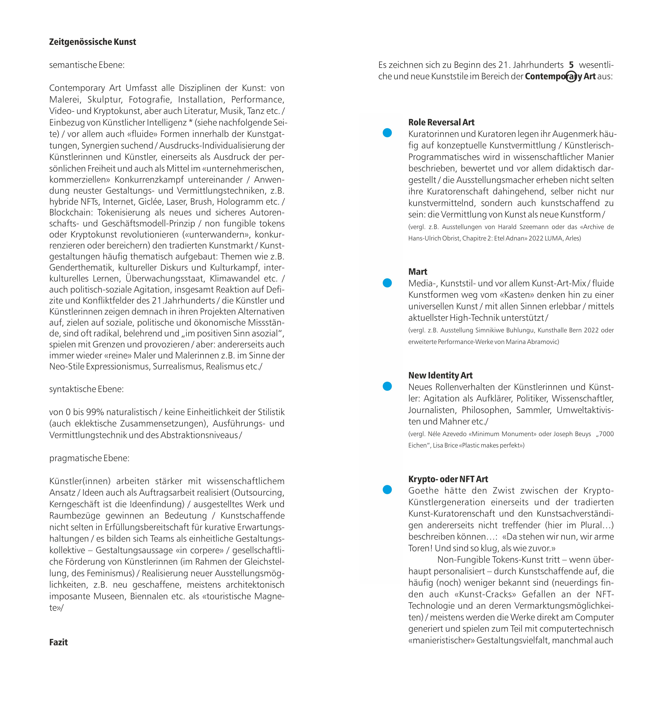
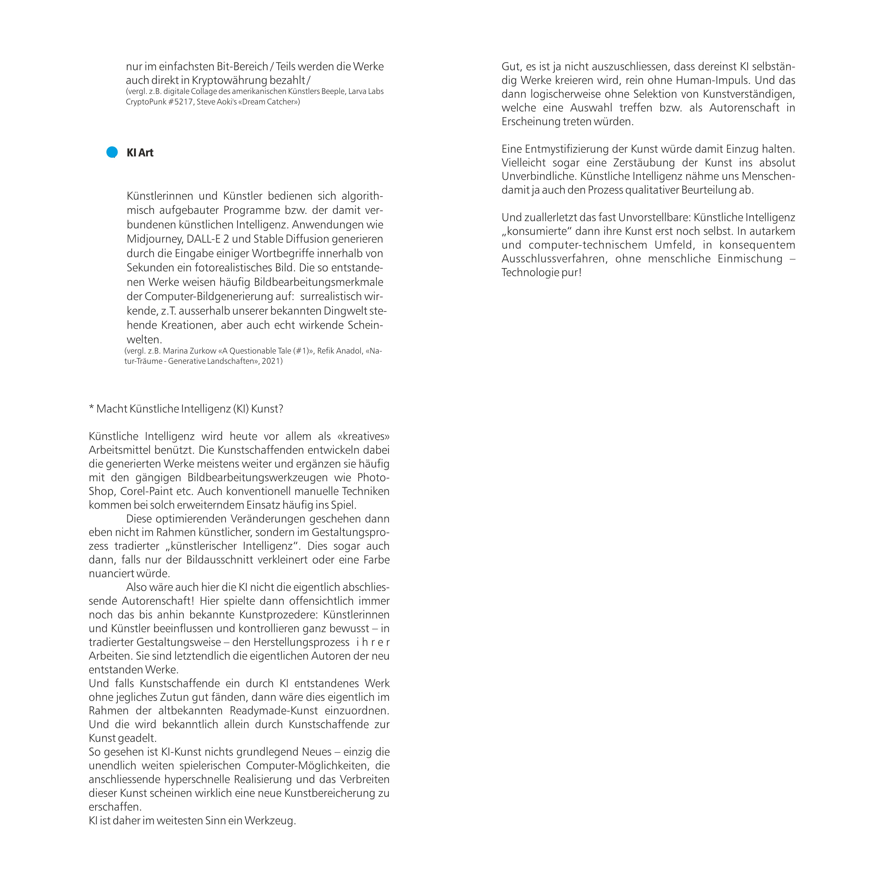

Notes from the curator
Three studies from ART GSTAAD — a discovery, an artist, and an argument.

Study I
Sometimes a work surfaces that demands a second, and a third, look. ART GSTAAD documents an interesting find connected to Pablo Picasso — presented for examination, comparison and discussion, in the spirit of the collection: look closely, then look again.
Study II
The South African painter Lisa Brice reclaims the female figure from a century of male gazes — her figures, often rendered in cobalt blue, return the viewer's look on their own terms. Works connected to Brice hold a special place in the ART GSTAAD collection and in the opening exhibition, Can art answer?




Study III
What makes art contemporary — the date on the label, or the questions it still asks? ART GSTAAD proposes a new definition of contemporary art: one measured not by when a work was made, but by whether it still speaks to the present. The full argument is published by ART GSTAAD as an essay.


